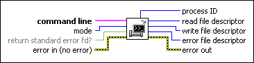

Open System Command Pipe VI
Owning Palette: Pipes VIs
Requires: Base Development System (Linux)
Opens a pipe to a system shell command and returns file descriptors that you can pass to subsequent Pipes VIs.
You must use the Close Pipe VI to close all returned file descriptors.

 Add to the block diagram Add to the block diagram |
 Find on the palette Find on the palette |